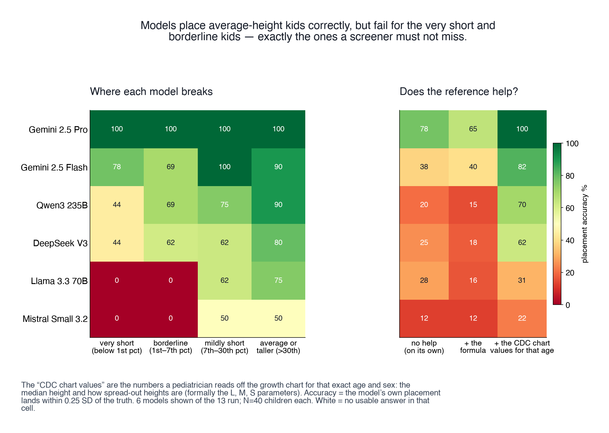
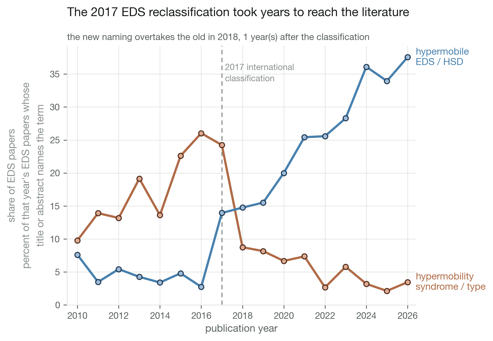
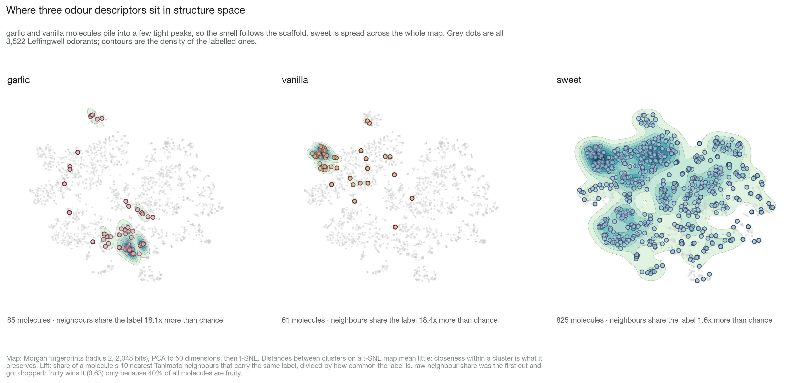

Dom Martinelli
biomedical informatics · Cornell · Kohane lab, Harvard DBMI
- Python
- SMART on FHIR
- RDKit
- scikit-learn
- GeoPandas
- matched designs
- LLM evaluation
- ClinicalTrials.gov / AACT
- PubMed / iCite
- matplotlib

A pediatric growth benchmark
in progressgrowth-assessment items curated out of public medical QA sets
benchmark design · LLM evaluation · annotation schema design · provenance auditing

Height z-score computation by language models
in progressCLI benchmark scoring models against the referral threshold
benchmark design · clinical safety metric design · prompt ablation design · LLM evaluation

Over-referral as a representation failure
in progressdeployment-behaviour benchmark on healthy short children
deployment-behaviour benchmark design · prompt condition and ablation design · LLM evaluation at scale · clinical cost and PPV modelling
FDA-authorized AI devices
livefilterable registry of every AI device the FDA has authorized
public-data reporting · interactive data visualisation · front-end engineering without a framework · regulatory literature review

Growth monitoring from the health record
livesingle-file SMART on FHIR app reading a child's growth history
SMART on FHIR integration · OAuth 2.0 / PKCE · FHIR querying and parsing · clinical rule design
A family-facing growth chart
livepatient-facing SMART on FHIR demo, Epic sandbox
SMART on FHIR integration · OAuth launch configuration · TypeScript front-end architecture · growth analysis implementation
Menu ranking for people on GLP-1 medication
in progresschain menus scored against a protein-first, small-portion pattern
rubric and scoring design · evidence review with strength grading · dataset compilation and provenance flagging · Next.js product build

Advocacy partners and trial enrollment failure
in progressmatched registry study of trials that stop for lack of patients
matched cohort design · coarsened exact matching · bootstrap inference · registry API pipelines

How long evidence takes to reach practice
in progressfour case studies timing guidelines, labels and the literature
bibliometric trend analysis · pharmacovigilance signal analysis · rate-limited API pipelines · denominator normalisation
Measuring patient involvement in research
in progresstext-signal index of how much patients shaped a published study
composite index construction · control-set design · coarsened exact matching · field-normalised citation analysis

Flavour identity and sweetener potency
in progresscheminformatics on what single molecules carry, and what structure predicts
cheminformatics · molecular fingerprints · dimensionality reduction · baseline-controlled modelling

Drug classes against the chemistry
finishedwakefulness, ADHD and weight-loss drugs plotted by molecular property
cheminformatics · molecular descriptor analysis · API data collection · figure design

Predicting activity of chemically modified siRNA
in progressclassifier for silencing activity from sequence and modification pattern
supervised classification · sequence feature engineering · model comparison · imbalanced-data evaluation